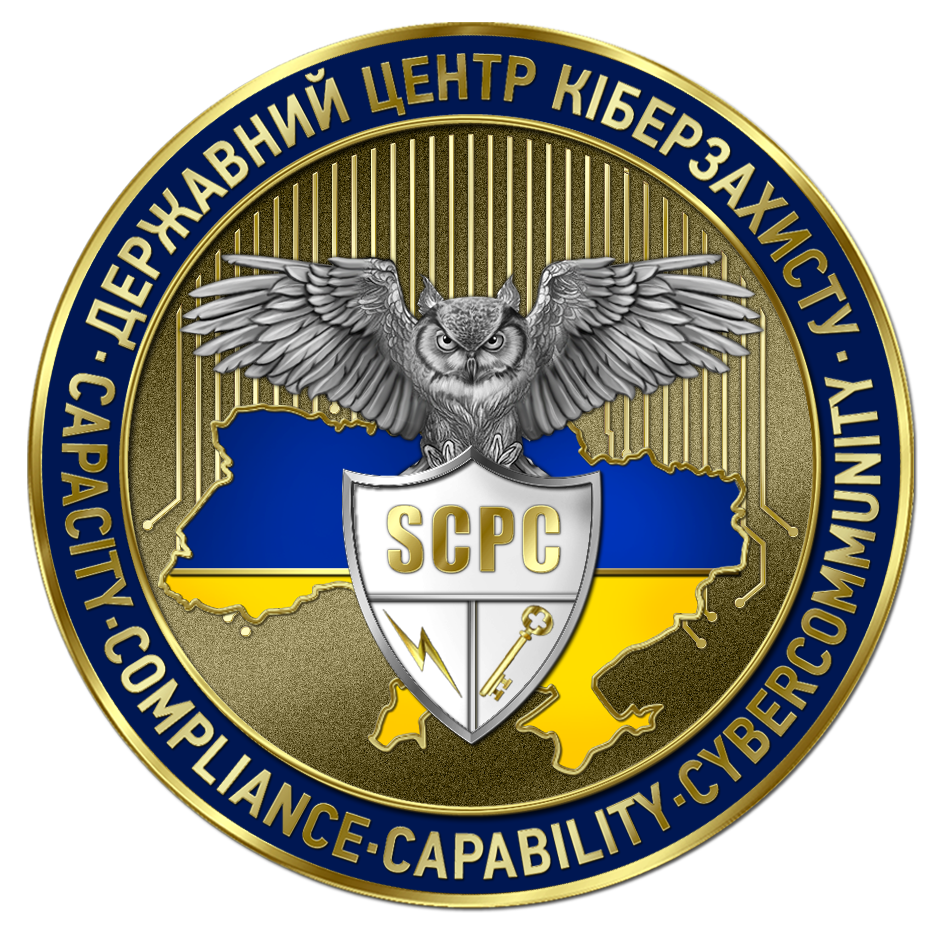
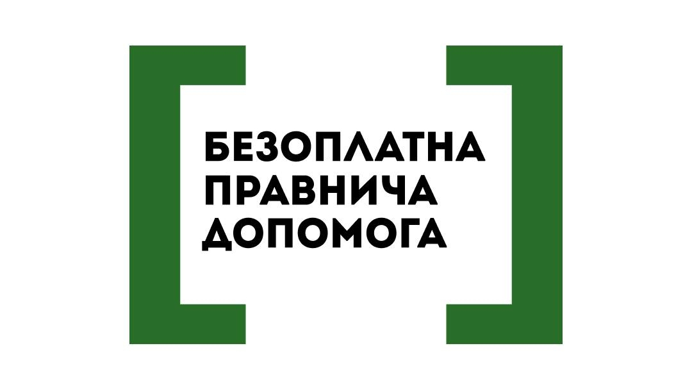

Новини
Slide 1 of 4 
Slide 2 of 4 
Slide 3 of 4 
Slide 4 of 4 
Сайт функціонує в тестовому режимі.
Зауваження та пропозиції стосовно роботи сайту надсилайте на admin@cip.gov.ua
© Державний центр кіберзахисту Держспецзв’язку
Всі матеріали на цьому сайті розміщені на умовах ліцензії Creative Commons Attribution 4.0 International
Всі матеріали на цьому сайті розміщені на умовах ліцензії Creative Commons Attribution 4.0 International